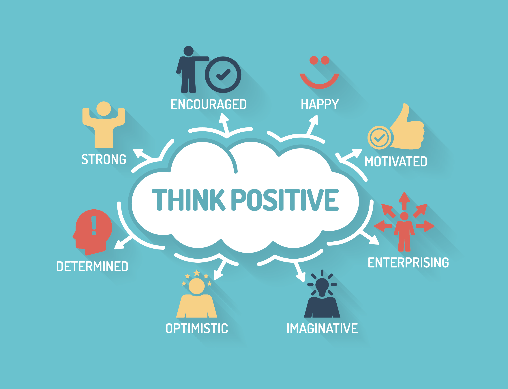

I, being an optimistic and enthusiastic person have always found happiness in doing my work.
I have always been eager to explore new things
and always believed that -“Live as if you were to die tomorrow. Learn as if you were to live forever.”
As a budding Computer Science Engineer I thrive to learn various languages and implement them in solving real-time problems.
ABOUT ME


Academics
I have completed my academics from prestiged instituitions and has always been a merit student.
Check this out to know more about my Academic Achievements.
Certificates
Check this out to know about my technical skills,
that I have aquired by learning various courses in various platforms such as Coursera, Shape AI.

Projects
As a Front-End developer, I have done a couple of projects.
Also being a Computer Science Engineer, I have got projects in Python and Machine Learning.